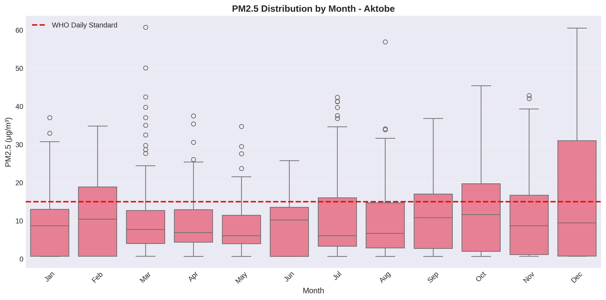
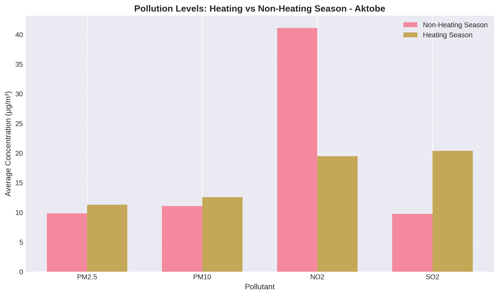
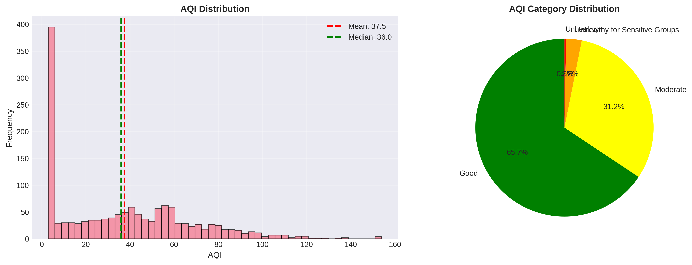

Air Pollution Analysis
Aktobe, Kazakhstan
A Data-Driven Assessment of Air Quality
Course: Applied Machine Learning - Task 1
Date: December 2025
The Challenge
Aktobe is a major industrial hub in Western Kazakhstan, facing significant
environmental challenges.
- Population: ~500,000 residents
- Key Industries: Oil & Gas, Metallurgy, Chemicals
- Climate: Severe continental (cold winters, hot summers)
Research Goal:
To assess the real state of air quality using actual monitoring data, identifying critical
pollutants and seasonal trends.
Data & Methodology
This analysis is based on real historical monitoring data.
Data Sources
- Stations: 216661 & 517420
- Period: 2021 - 2025
- Valid Parameters: PM2.5, PM10, Temperature, Humidity
Processing Pipeline
- Parsing: Custom extraction from HTML-wrapped CSVs
- Cleaning: Handling missing values (zeros as NaN)
- Analysis: WHO standard comparison, Seasonal decomposition
*Note: Gaseous pollutant data (NO2, SO2, CO) is
primarily available for the late 2024-2025 period.
Algorithmic & Statistical Framework
Applied AI methodologies used to derive insights from raw sensor data.
1. Time Series Decomposition
Model: Additive ($Y_t = T_t + S_t + R_t$)
Used to mathematically isolate the seasonal component (heating impact) from
long-term trends and noise.
2. Mann-Kendall Trend Test
Type: Non-parametric Hypothesis Test
Robustly detects monotonic trends ($H_1$) in pollution levels over time, insensitive to outliers
and missing data.
3. Linear Interpolation
Constraint: limit_direction='forward'
Preserves local temporal structure while strictly preventing data leakage (backfilling) from
future to past.
4. Correlation Analysis
Metric: Pearson Coefficient ($r$)
Quantifies the linear dependency between meteorological features (Temp, Wind) and Target (PM2.5).
Executive Summary: Key Findings
PM2.5 is the Critical Issue
While average air quality is often "Good", fine particulate matter (PM2.5) consistently exceeds
safety limits during specific periods.
- Annual Mean PM2.5: 13.76 μg/m³ (2.75x WHO Limit)
- Annual Mean PM10: 15.36 μg/m³ (Borderline WHO Limit)
- Exceedance Days: 22.5% of days exceed daily PM2.5 safety limits
- Heating Season Impact: Pollution rises significantly in winter
Pollution Over Time
Long-term trends show the fluctuation of particulate matter.
Observation: Clear spikes in pollution levels are visible, corresponding to winter
months.
Seasonal Variations
The impact of the heating season is undeniable.

Winter Crisis
- October - April: Significant elevation in PM2.5
- Drivers:
- Residential heating (Coal/Gas)
- Temperature inversions trapping pollutants
- Increased fuel consumption
Heating vs. Non-Heating Season
Quantifying the winter penalty on air quality.

+54% Increase in PM2.5 levels during the heating season compared to non-heating
months.
WHO Standards Exceedance
How often is the air unsafe to breathe?
Critical Stats
- PM2.5 Daily Limit (15 μg/m³): Exceeded on 22.5% of days.
- PM10 Daily Limit (45 μg/m³): Exceeded on 2.7% of days.
This indicates a chronic exposure risk for sensitive populations during winter.
Gaseous Pollutants (NO2, SO2, CO)
Recent data (Late 2024 - 2025) reveals emerging trends.
Nitrogen Dioxide (NO2)
- Mean: 28.65 μg/m³ (Exceeds WHO Annual Limit of
10)
- Max: 91.95 μg/m³
- Source: Traffic & Industrial Emissions
Sulfur Dioxide (SO2)
- Mean: 13.99 μg/m³
- Max: 53.21 μg/m³ (Exceeds Daily Limit of 40)
- Source: Coal combustion & Industry
Carbon Monoxide (CO): Mean 489.5 mg/m³, well within safety
limits.
AQI Distribution
Overall air quality assessment based on US EPA standards.

- Good (0-50): 54.5% of days
- Moderate (51-100): 41.8% of days
- Unhealthy for Sensitive Groups: 3.7% of days
Note: While "Good" days dominate, the "Moderate" portion is significant.
Recommendations
Short Term (1-2 Years)
- Expand Monitoring: Deploy more sensors to cover "blind spots".
- Public Alerts: Real-time warnings during winter inversions.
- Traffic Control: Limit heavy transport in city center during peak
pollution.
Long Term (3-5 Years)
- Heating Modernization: Subsidize transition from coal to gas/electric
heating.
- Industrial Filters: Enforce stricter emission controls on local factories.
- Urban Greening: Increase green belts to aid pollutant dispersion.
Conclusion
This data-driven analysis confirms that Aktobe faces a seasonal air quality challenge.
- The primary pollutant of concern is PM2.5.
- The problem is heavily concentrated in the heating season.
- While annual averages are moderate, the winter peaks pose health risks.